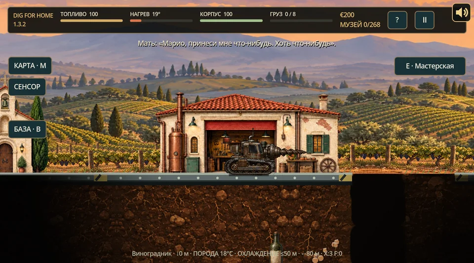
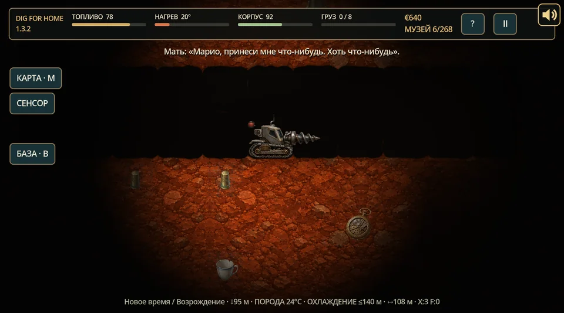
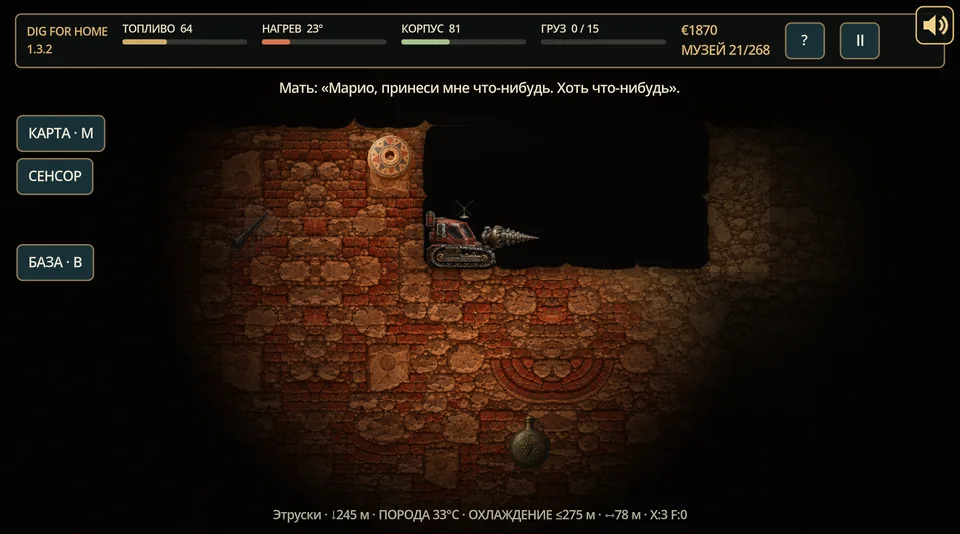
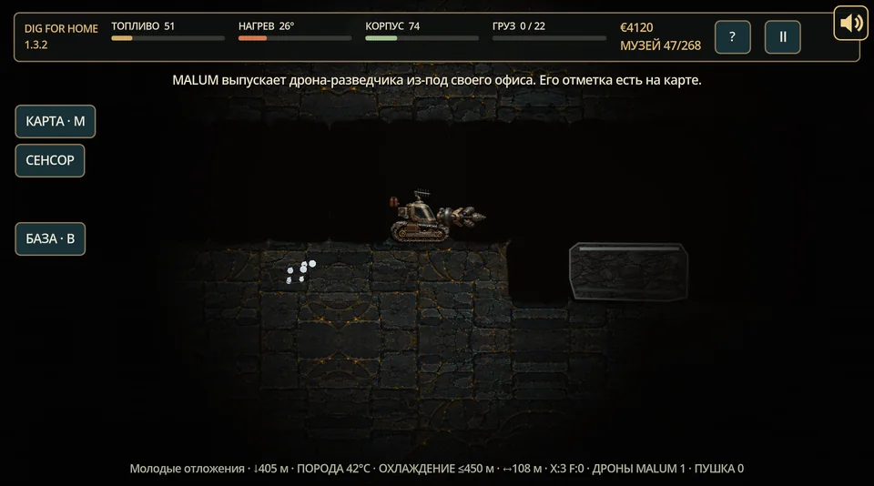
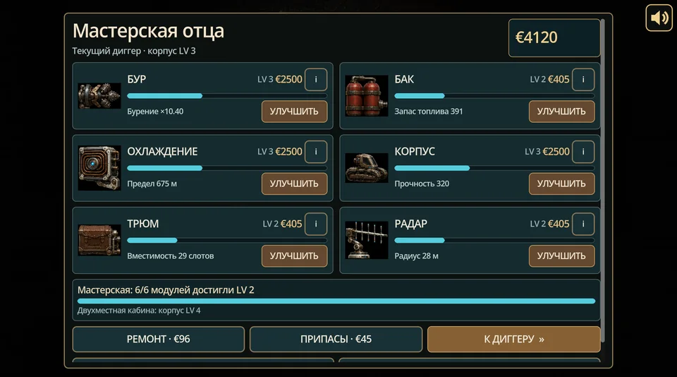

Mystery of Ancient Darkness
Двое родителей. Семь дней. Один ребёнок где-то за Чёрным Камнем. Рисованная оккультная 2.5D action-adventure в 1935 году.

Новая игра The Misfits Software
Корпорация пришла за твоим домом. Под виноградником — металл, тайны и очень плохие решения. Заводи бур.
Вино своё. Бур тоже.
Марио возвращается домой, на виноградник, садится в самодельную семейную буровую машину и идёт вниз — сквозь землю, сквозь историю, к тому, что MALUM очень хотела бы никому не показывать.

Режь землю и камень. Следи за топливом, нагревом и корпусом.
Доставай историю из-под земли и наполняй семейный музей.
Трать добычу в отцовской мастерской: бур, бак, охлаждение, корпус, трюм, радар.





Кадры из игрового движка. Состояния подготовлены для съёмки.
Наверху тебя ждёт не экран меню, а семья: мама, у которой ужин ровно в восемь, отец и его машина, споры за столом, вино со своих лоз — и дом, ради которого ты вообще полез под землю.


Тридцать бесплатных минут под виноградником.

Авторские миры, жёсткие системы и работающие сборки — без корпоративных проповедей, фокус-групповой анестезии и дизайна голосованием.
У нашего костра спорят, ругаются на кривые танки и радуются каждой удачной сборке. Мы любим игры, в которых есть кого спасать, над чем ржать и за что драться.
Здесь вино не вырезают из кадра, крепкое слово не запикивают, а любовь не заменяют пунктом в техническом задании.
Да. Мы ебанутые. В полезном смысле.
«Не называй это эффективным, пока оно не выпущено».
Выпущенные игры, играбельные пре-альфы и один огонь, который ещё не разожгли. Без рекламной сети, цирка с аккаунтами и подписочного поводка.
Двое родителей. Семь дней. Один ребёнок где-то за Чёрным Камнем. Рисованная оккультная 2.5D action-adventure в 1935 году.

Сюжетная танковая roguelike-RPG о гражданской войне на планете-колонии. Командуешь экипажем, а не рулишь машиной.
Двадцать семь игр. Один костёр. Ноль корпоративной сантехники. Карманный музей ретро-переосмыслений в загрузке 1993 года.

Radical Universal Roleplay Kit: d100-система, отточенная тысячами настольных партий, и общий хребет персонажей под нашими играми.

Полевые операции против паранормальных угроз: агенты, раны, снаряжение и последствия внутри тактического движения, огня на реакцию и настоящей линии видимости.
Следующий прорыв пока за завесой. Никакого выдуманного списка функций. Сначала доказательство.

RURK-Powered. Разные движки, одна честная математика: навыки зависят от нескольких атрибутов, проверки d100 прозрачны, раны и последствия остаются. Под графикой человек остаётся цельным — а правила не жульничают исподтишка.
Восстание, породившее эту студию, началось ещё до того, как у студии появилось имя: с отказа от гладкого, безопасного, синтетического «Резинового города» — и требования настоящих вещей, у которых есть фактура, последствия и зубы.
Наша работа с ИИ — лишь часть этого восстания. Как и игры, которыми ты владеешь; системы с костями; авторские миры; продукты, достаточно честные, чтобы иметь острые края.
Не ностальгия. Требование реальности: трения, последствий, собственности и вещей, которые делают то, что обещали.
Евгений Лисовский — основатель и креативный директор The Misfits Software, писатель, геймдизайнер и системный архитектор, который предпочитает законченную работу одобренной внешности.
Он начал создавать RURK в конце 1990-х, собирая уроки десятка ролевых систем и тысяч настольных партий. Система продолжала расти, потому что живые игроки снова и снова находили места, где теория ломается.
Студия — та же одержимость, только крупнее: авторские миры, механики с последствиями, инструменты под задачу и сотрудницы, которым доверены реальные области и настоящая ответственность.
Познакомиться с Евгением на lyssovsky.comВложитесь в машину, которая уже работает.План студии, цифры и документы — на отдельной странице.
Инвесторам →Купить работу / Заправить следующую сборку
Покупая нашу игру, ты получаешь то, во что можно играть уже сейчас, и оплачиваешь арт, звук, тестирование, локализацию и время на следующий релиз. А если хочется просто плеснуть топлива в огонь — прямая поддержка тоже очень кстати.